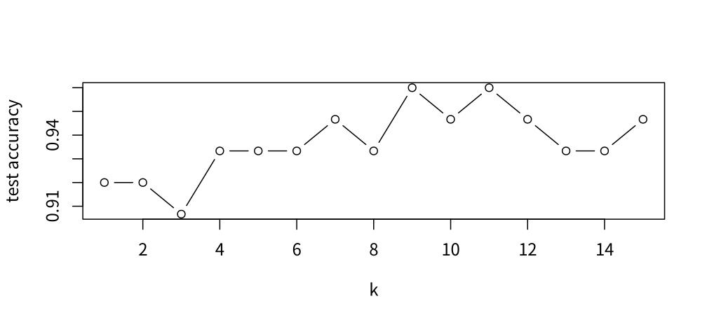
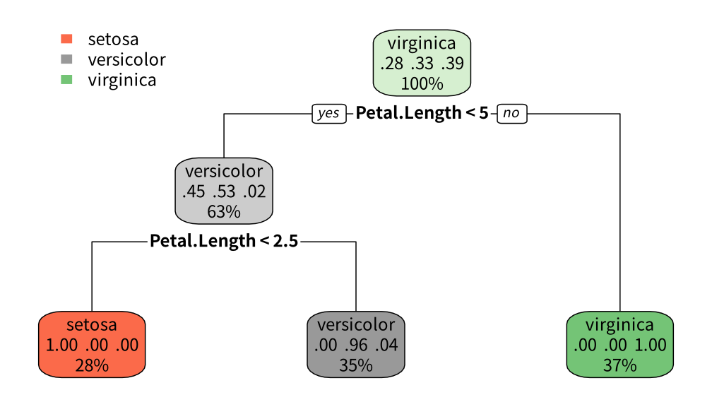
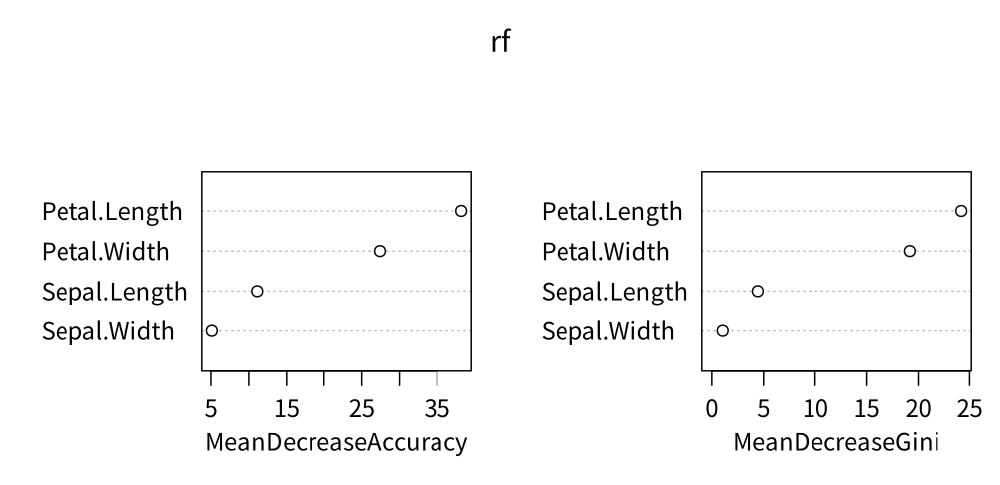

首頁 › 課程筆記 › 第 10 章 監督式學習 邏輯斯迴歸 就是一種監督式分類方法；這一章介紹機器學習常用的幾種分類演算法：K 最近鄰 、決策樹 、隨機森林 （與其他集成方法）、支持向量 機 。不論哪一種，流程都一樣：
切分訓練集 與測試集 （第 8 章）；
用訓練集配適模型；
用測試集預測，以混淆矩陣
10.1 分類的流程與評估指標切分訓練集與測試集
以 iris 為例：用花萼、花瓣的長寬（特徵）預測品種（標籤）。
複製 ▶ 執行 R set.seed ( 2026 )
trainI <- sample ( 1 : 150 , 75 ) # 隨機抽 75 個列編號當訓練集
traind <- iris [ trainI , ]
testd <- iris [ - trainI , ] # 負索引：其餘 75 列當測試集
table ( traind $ Species )
##
## setosa versicolor virginica
## 21 25 29混淆矩陣與三個指標
二元分類（例如是否取消、是否核卡）的混淆矩陣：
預測 = 1（陽性）
預測 = 0（陰性）
實際 = 1
真陽性 TP
偽陰性 FN
實際 = 0
偽陽性 FP
真陰性 TN
正確率 （accuracy）= (TP + TN) / 全部：整體預測對的比例。敏感度 （sensitivity，真陽率、召回率）= TP / (TP + FN)：實際是 1 的個案中，被預測為 1 的比例。特異度 （specificity，真陰率）= TN / (TN + FP)：實際是 0 的個案中，被預測為 0 的比例。
在 R 裡，用 table(實際, 預測) 做混淆矩陣，再用位置取出各格：
複製 ▶ 執行 R actual <- c ( 1 , 1 , 1 , 1 , 0 , 0 , 0 , 0 , 0 , 0 )
predicted <- c ( 1 , 1 , 1 , 0 , 0 , 0 , 0 , 0 , 1 , 0 )
cm <- table ( Real = actual , Predict = predicted )
cm
## Predict
## Real 0 1
## 0 5 1
## 1 1 3複製 R accuracy <- sum ( diag ( cm )) / sum ( cm ) # 對角線 = 預測正確
sensitivity <- cm [ "1" , "1" ] / sum ( cm [ "1" , ]) # 實際 1 的那一列
specificity <- cm [ "0" , "0" ] / sum ( cm [ "0" , ]) # 實際 0 的那一列
c ( accuracy = accuracy , sensitivity = sensitivity , specificity = specificity )
## accuracy sensitivity specificity
## 0.8000 0.7500 0.8333
diag(cm) 取出對角線（預測正確的格子），加總除以總數就是正確率。cm["1", "1"]：用列名、欄名取格子，比用位置 cm[2, 2] 不容易弄錯。列是實際值、欄是預測值。這個例子：實際取消 4 筆中抓到 3 筆，敏感度 0.75；實際沒取消 6 筆中判對 5 筆，特異度約 0.83。
重點 為什麼不能只看正確率 如果 90% 的訂房都沒有取消，一個「全部猜不會取消」的模型正確率就有 90%，但敏感度是 0——一筆取消都抓不到。所以要同時報告敏感度與特異度。
Concept Check：10.1 分類的流程與評估指標 題目照期末考的題型自編（選擇、填空、簡答、寫程式），不是老師出的題目。選擇與填空用英文題幹，附中文題意。
In a booking-cancellation model, what does sensitivity measure?
(A) Among bookings predicted to cancel, the share that actually canceled (B) Among bookings that actually canceled, the share predicted to cancel (C) Among bookings that did not cancel, the share predicted not to cancel (D) Among all bookings, the share that were predicted correctly 顯示解答 答案 (B) Among bookings that actually canceled, the share predicted to cancel
解析
敏感度 = TP / (TP + FN)，分母是「實際取消」的訂房。(A) 是精確率（precision）；(C) 是特異度；(D) 是正確率。
A confusion matrix (rows = real, columns = predicted) shows: real 1 predicted 1 = 80, real 1 predicted 0 = 20, real 0 predicted 1 = 30, real 0 predicted 0 = 170. What is the specificity?
(A) 0.850 (B) 0.800 (C) 0.833 (D) 0.727 顯示解答 中文題意
TP = 80、FN = 20、FP = 30、TN = 170，特異度是多少？
解析
特異度 = TN / (TN + FP) = 170 / 200 = 0.85。(B) 是敏感度 80/100；(C) 是正確率 250/300；(D) 是精確率 80/110。
Write a function class_metrics(actual, predicted) that returns a list with accuracy, sensitivity and specificity, treating 1 as the positive class.
顯示解答 中文題意
寫一個 class_metrics(actual, predicted) 函數，以 1 為陽性，回傳正確率、敏感度、特異度的 list。
答案 複製 ▶ 執行 R class_metrics <- function ( actual , predicted ) {
cm <- table ( Real = actual , Predict = predicted )
list ( accuracy = sum ( diag ( cm )) / sum ( cm ),
sensitivity = cm [ "1" , "1" ] / sum ( cm [ "1" , ]),
specificity = cm [ "0" , "0" ] / sum ( cm [ "0" , ]))
}
class_metrics ( c ( 1 , 1 , 0 , 0 , 0 ), c ( 1 , 0 , 0 , 0 , 1 ))
## $accuracy
## [1] 0.6
##
## $sensitivity
## [1] 0.5
##
## $specificity
## [1] 0.6667解析
第 3 章「回傳多個結果用 list」。前提是 actual 和 predicted 都同時出現 0 和 1，表格才會有 "0"、"1" 兩列兩欄。
Only 2% of transactions are fraudulent. A model that labels every transaction as "not fraud" has an accuracy of about:
(A) 2%, because it never detects fraud (B) 50%, because there are two classes (C) 98%, even though it catches no fraud (D) 100%, because it never makes a false alarm 顯示解答 中文題意
只有 2% 的交易是詐欺，模型把所有交易都判為「不是詐欺」，正確率大約是多少？
答案 (C) 98%, even though it catches no fraud
解析
98% 的交易本來就不是詐欺，全判「不是」就對了 98%。但它一筆詐欺都沒抓到，敏感度是 0。類別很不平衡時，正確率會誤導，要同時看敏感度與特異度。
A confusion matrix has TP = 30, FN = 20, FP = 10, TN = 140. The sensitivity is _ _
顯示解答 中文題意
TP = 30、FN = 20、FP = 10、TN = 140，敏感度與特異度各是多少？
解析
敏感度 = TP ÷ (TP + FN) = 30 ÷ 50 = 0.600；特異度 = TN ÷ (TN + FP) = 140 ÷ 150 ≈ 0.933。分母都是「實際的那一類」的總數。
10.2 K 最近鄰 KNNKNN （K Nearest Neighbor）是最直觀的分類法：要判斷一個新點，就看離它最近的 k 個訓練資料，多數屬於哪一類就判為哪一類 。
\[P(Y=j\mid X=x)=\frac{1}{k}\sum_{i\in N_k(x)} I(y_i=j)\]
因為完全依靠距離，數值變數要先標準化 、類別變數要轉成虛擬變數 （第 9 章 9.2）。
複製 R library ( class )
pred <- knn ( train = traind [, 1 : 4 ], test = testd [, 1 : 4 ],
cl = traind [, 5 ], k = 6 )
table ( Real = testd [, 5 ], Predict = pred )
## Predict
## Real setosa versicolor virginica
## setosa 29 0 0
## versicolor 0 23 2
## virginica 0 3 18
knn(train, test, cl, k)：train、test 是特徵，cl 是訓練集的標籤，k 是鄰居數。直接回傳測試集的預測類別。KNN 沒有「訓練」這一步，預測時才即時計算距離，叫懶惰學習 （lazy learning）；資料大時預測很慢。
選 k：掃描一段範圍
複製 R k_range <- 1 : round ( 0.2 * nrow ( traind )) # k 上限取訓練筆數的 20%
accuracies <- rep ( NA , length ( k_range ))
for ( i in k_range ) {
p <- knn ( traind [, 1 : 4 ], testd [, 1 : 4 ], cl = traind [, 5 ], k = i )
cm <- table ( testd $ Species , p )
accuracies [ i ] <- sum ( diag ( cm )) / sum ( cm )
}
which.max ( accuracies )
## [1] 9複製 R plot ( k_range , accuracies , type = "b" , xlab = "k" , ylab = "test accuracy" )

for 迴圈 對每個 k 各跑一次 KNN，把正確率存進向量（第 3 章「先建空向量再填」），which.max() 找出正確率最高的 k。
Concept Check：10.2 K 最近鄰 KNN 題目照期末考的題型自編（選擇、填空、簡答、寫程式），不是老師出的題目。選擇與填空用英文題幹，附中文題意。
How does KNN classify a new observation?
(A) By the majority class among its k nearest training points (B) By fitting a logistic regression model on the k nearest points (C) By assigning it to the cluster with the closest centroid (D) By following a sequence of yes/no splits on the features 顯示解答 答案 (A) By the majority class among its k nearest training points
解析
看最近的 k 個訓練資料的類別，多數決。(C) 是 K-means 的分配方式（非監督）；(D) 是決策樹。
In knn(train, test, cl, k) from the class package, the argument _
顯示解答 中文題意
knn() 中哪個引數放訓練資料的類別標籤？
答案 cl
解析
train、test 只放特徵欄，標籤另外用 cl 給。
Why should numeric features be standardized before using KNN?
顯示解答 中文題意
為什麼使用 KNN 前要把數值特徵標準化？
答案 KNN 依據距離找最近的鄰居，距離會被數值範圍大的變數主導。例如房價（幾千元）和住宿晚數（幾晚）一起算距離時，晚數的差異幾乎沒有影響，鄰居只依房價決定。標準化後各變數尺度相同，才能公平地共同決定誰是鄰居。
In KNN, what usually happens when k is increased from 1 to a much larger value?
(A) The decision boundary becomes smoother and less sensitive to noise (B) The model memorizes the training data more and more closely (C) The model stops needing the predictor variables to be scaled (D) Prediction becomes much faster because fewer neighbors are compared 顯示解答 中文題意
KNN 的 k 從 1 調到很大，通常會怎樣？
答案 (A) The decision boundary becomes smoother and less sensitive to noise
解析
k = 1 只看最近的一個點，很容易被雜訊影響（過度配適）；k 越大，投票的鄰居越多，邊界越平滑，但 k 太大會把不同類別混在一起。(B) 是 k 很小的情況；(C) 標準化與 k 無關；(D) 計算距離的工作量不會因 k 變大而減少。
KNN is called a "lazy learner". Explain what this means and one practical consequence for large datasets.
顯示解答 中文題意
KNN 為什麼叫懶惰學習？對大型資料有什麼實際影響？
答案 KNN 在「訓練」時不建立任何模型，只把訓練資料存起來；等到要預測新資料時，才去計算它和所有訓練資料的距離、找出最近的 k 個鄰居投票。因此訓練幾乎不花時間，但每次預測都要和全部訓練資料比距離，資料很大時預測會很慢，也需要把整份訓練資料留在記憶體中。
解析
相對地，決策樹、邏輯斯迴歸是「積極學習」：先花時間建好模型，預測時只要代入模型，很快。
10.3 決策樹決策樹 （decision tree）用一連串「是非問題」把資料逐步切開，形成像樹一樣的規則，例如「訂金類型是不退款嗎？是 → 預測取消；否 → 再看提前訂房天數……」。
優點：同時處理數值與類別變數、幾乎不需要前處理（不用標準化）、規則容易解讀 ，可以直接轉成營運決策。
缺點：單棵樹容易過度配適 、對資料的小變動敏感；類別太多時錯誤率容易上升。
每次切分選「讓子節點最純」的變數與切點，純度用 Gini 指數 或交叉熵 衡量。
複製 R library ( rpart )
library ( rpart.plot )
tree <- rpart ( Species ~ . , data = traind , method = "class" )
tree
## n= 75
##
## node), split, n, loss, yval, (yprob)
## * denotes terminal node
##
## 1) root 75 46 virginica (0.28000 0.33333 0.38667)
## 2) Petal.Length< 4.95 47 22 versicolor (0.44681 0.53191 0.02128)
## 4) Petal.Length< 2.45 21 0 setosa (1.00000 0.00000 0.00000) *
## 5) Petal.Length>=2.45 26 1 versicolor (0.00000 0.96154 0.03846) *
## 3) Petal.Length>=4.95 28 0 virginica (0.00000 0.00000 1.00000) *
rpart(Y ~ ., data, method = "class")：. 表示用其他所有變數；method = "class" 是分類樹（Y 是連續數值時用 "anova" 迴歸 樹）。印出的每一行是一個節點：node) 編號、split 切分規則、n 筆數、loss 分錯的筆數、yval 這個節點預測的類別、括號內是各類別的比例；有 * 的是葉節點 （最終的分類）。

rpart.plot() 把樹畫出來：每個節點顯示預測類別、各類比例與占全部資料的百分比，節點下方是切分規則（往左是「是」）。
複製 R pred <- predict ( tree , newdata = testd , type = "class" )
table ( Real = testd $ Species , Predict = pred )
## Predict
## Real setosa versicolor virginica
## setosa 29 0 0
## versicolor 0 23 2
## virginica 0 5 16predict(..., type = "class") 直接回傳預測類別；type = "prob" 則回傳各類別的機率。
Concept Check：10.3 決策樹 題目照期末考的題型自編（選擇、填空、簡答、寫程式），不是老師出的題目。選擇與填空用英文題幹，附中文題意。
Which is a main advantage of a single decision tree?
(A) It never overfits the training data (B) Its rules are easy to interpret and explain (C) It always has the highest test accuracy (D) It requires all features to be standardized 顯示解答 答案 (B) Its rules are easy to interpret and explain
解析
決策樹的規則可以直接讀出來、轉成決策。單棵樹容易過度配適，準確度常不如隨機森林；它依切點分割，不需要標準化。
To build a classification tree with rpart, set method = "________"; for a regression tree with a numeric response, use method = "anova".
顯示解答 中文題意
用 rpart 建分類樹時 method 要設成什麼？
答案 class
解析
rpart(Y ~ ., data = train, method = "class")。
For a classification tree tree, which call returns the predicted class labels for testd?
(A) predict(tree, testd, type = "prob")(B) predict(tree, testd, type = "response")(C) predict(tree, testd, type = "class")(D) predict(tree, testd, type = "link")顯示解答 答案 (C) predict(tree, testd, type = "class")
解析
rpart 用 type = "class" 得到類別、"prob" 得到機率。"response"、"link" 是 glm() 的用法（第 7 章）。
Using AER::CreditCard, split the data 70/30 (set.seed(2026)), fit a classification tree of card on reports, age, income, owner and expenditure, and compute the test accuracy, sensitivity and specificity (positive = "yes").
顯示解答 中文題意
用 CreditCard 7:3 切分，以決策樹預測 card，計算測試集正確率、敏感度、特異度（陽性 = yes）。
答案 複製 R library ( AER )
data ( "CreditCard" )
set.seed ( 2026 )
tr <- sample ( nrow ( CreditCard ), round ( 0.7 * nrow ( CreditCard )))
cc_train <- CreditCard [ tr , ]; cc_test <- CreditCard [ - tr , ]
cc_tree <- rpart ( card ~ reports + age + income + owner + expenditure ,
data = cc_train , method = "class" )
p <- predict ( cc_tree , cc_test , type = "class" )
cm <- table ( Real = cc_test $ card , Predict = p )
cm
## Predict
## Real no yes
## no 98 0
## yes 5 293複製 R c ( accuracy = sum ( diag ( cm )) / sum ( cm ),
sensitivity = cm [ "yes" , "yes" ] / sum ( cm [ "yes" , ]),
specificity = cm [ "no" , "no" ] / sum ( cm [ "no" , ]))
## accuracy sensitivity specificity
## 0.9874 0.9832 1.0000解析
expenditure（每月信用卡支出）幾乎只有核卡的人才大於 0，所以樹第一刀就切在它，正確率非常高——這其實是資料洩漏 （leakage）：用到了「結果發生後才知道」的資訊。做預測模型時要確認每個變數在預測時點真的拿得到；作業 3 的 reservation_status 也是同樣的情況。
When rpart() grows a classification tree, how does it choose each split?
(A) It picks the split that makes the child nodes as pure as possible (B) It picks the variable that has the largest correlation with Y overall (C) It picks the variable listed first in the model formula (D) It picks a random variable and a random cut-off point 顯示解答 中文題意
rpart() 建分類樹時，每一次分割是怎麼選的？
答案 (A) It picks the split that makes the child nodes as pure as possible
解析
每一步都嘗試所有變數與切點，選讓子節點「最純」（Gini 指數或交叉熵下降最多）的那一個。(D) 比較像隨機森林的做法（每次只從隨機挑出的部分變數中選），但切點仍是找最好的，不是隨機。
10.4 隨機森林與集成方法單棵樹不穩定，集成學習 （ensemble）結合很多棵樹的結果來提升穩定與準確度。
隨機森林 （Random Forest）種很多棵樹，每棵樹：
在列方向 用 bootstrap（第 8 章，取後放回）抽一份訓練資料；
在欄方向 ，每次切分只從隨機挑出的幾個變數中選。
最後所有樹投票 ，多數決決定類別。每棵樹看到的資料不同、彼此相關性低，平均起來誤差就小。
複製 R library ( randomForest )
set.seed ( 2026 )
rf <- randomForest ( Species ~ . , data = traind , importance = TRUE )
rf
##
## Call:
## randomForest(formula = Species ~ ., data = traind, importance = TRUE)
## Type of random forest: classification
## Number of trees: 500
## No. of variables tried at each split: 2
##
## OOB estimate of error rate: 5.33%
## Confusion matrix:
## setosa versicolor virginica class.error
## setosa 21 0 0 0.00000
## versicolor 0 23 2 0.08000
## virginica 0 2 27 0.06897
輸出的 OOB error （out-of-bag）：每棵樹沒抽到的那些資料（約 1/3）可以當成那棵樹的測試資料，彙總起來就是不需另外切分的誤差估計。
importance = TRUE 計算變數重要性 。
## setosa versicolor virginica MeanDecreaseAccuracy
## Sepal.Length 10.495 3.750 9.081 11.110
## Sepal.Width 3.428 4.528 1.858 5.116
## Petal.Length 24.637 30.213 31.851 38.247
## Petal.Width 24.774 21.175 17.653 27.420
## MeanDecreaseGini
## Sepal.Length 4.434
## Sepal.Width 1.051
## Petal.Length 24.203
## Petal.Width 19.166
複製 R pred <- predict ( rf , newdata = testd )
table ( Real = testd $ Species , Predict = pred )
## Predict
## Real setosa versicolor virginica
## setosa 29 0 0
## versicolor 0 23 2
## virginica 0 4 17
Mean Decrease Accuracy ：把這個變數的值打亂後，正確率下降多少；Mean Decrease Gini ：這個變數對降低不純度的總貢獻。兩者都是越大越重要。iris 中花瓣長、寬最重要。
其他集成方法：
Bagging （ipred::bagging）：只在列方向 bootstrap，多棵樹平行建立後投票。隨機森林多了「欄方向也隨機」。Boosting （adabag::boosting）：樹依序 建立，每棵樹加重前一棵分錯的樣本；準確但對雜訊敏感。XGBoost／LightGBM ：以樹為基礎的高效 boosting 實作，競賽與業界常用。 Concept Check：10.4 隨機森林與集成方法 題目照期末考的題型自編（選擇、填空、簡答、寫程式），不是老師出的題目。選擇與填空用英文題幹，附中文題意。
What is the key difference between a random forest and bagging?
(A) Random forest grows only one tree; bagging grows many trees (B) Bagging builds trees sequentially, focusing on past errors (C) Bagging does not use bootstrap samples of the observations (D) Random forest also samples features at each split 顯示解答 中文題意
隨機森林和 bagging 的主要差別是什麼？
答案 (D) Random forest also samples features at each split
解析
兩者都在列方向 bootstrap、建很多棵樹投票；隨機森林每次切分還只從隨機一部分變數中挑選，讓樹之間更不相關。(B) 描述的是 boosting。
After rf <- randomForest(y ~ ., data = train, importance = TRUE), the function _
顯示解答 答案 varImpPlot()（數值用 importance()）
解析
Mean Decrease Accuracy 與 Mean Decrease Gini 越大，變數越重要。
What is the out-of-bag (OOB) error in a random forest, and why is it useful?
顯示解答 中文題意
隨機森林的 OOB 誤差是什麼？有什麼用？
答案 每棵樹用 bootstrap 抽樣建立，大約有 1/3 的資料沒有被抽到（out-of-bag）。用每棵樹去預測它沒看過的那些資料，彙總所有樹的結果，就得到 OOB 誤差。因為這些資料沒有參與該樹的訓練，OOB 誤差是對新資料誤差的合理估計，不需要另外切出驗證集。
解析
概念和第 8 章的 bootstrap、測試集一致。
Which pair describes the two sources of randomness in a random forest?
(A) Random rows for each tree, and random columns at each split (B) Random class labels, and random tree depths for each tree (C) Random missing values, and random cut-off points at each split (D) Random test sets, and a random number of trees in the forest 顯示解答 答案 (A) Random rows for each tree, and random columns at each split
解析
每棵樹用自助抽樣（bootstrap）抽出的列訓練（列方向的隨機），每次分割只從隨機挑出的部分變數中選（欄方向的隨機）。兩者讓每棵樹不同，投票後更穩定。
After fitting rf <- randomForest(y ~ ., data = train, importance = TRUE), the functions _ _
顯示解答 中文題意
隨機森林配適後，用哪兩個函數以表格與圖形查看變數重要性？
答案 importance()；varImpPlot()
解析
兩個指標：Mean Decrease Accuracy（打亂這個變數後正確率下降多少）與 Mean Decrease Gini（這個變數讓節點變純的總量）。數值越大越重要。
10.5 支持向量機 SVM支持向量機 （Support Vector Machine）找一個能把兩類分開、而且邊界間隔（margin）最大 的分隔面。資料無法用直線分開時，用核函數 （kernel）把資料映射到高維空間再分割。常用的核：linear、polynomial、RBF（radial，高斯徑向基）、sigmoid。
複製 R library ( e1071 )
s <- svm ( Species ~ . , data = traind , probability = TRUE )
results <- predict ( s , testd )
table ( Real = testd $ Species , Predict = results )
## Predict
## Real setosa versicolor virginica
## setosa 29 0 0
## versicolor 0 23 2
## virginica 0 1 20
svm() 預設使用 RBF 核；probability = TRUE 讓模型能輸出類別機率。兩個重要參數：cost （C）控制分錯的懲罰，C 越大越想把訓練資料全部分對，偏誤低但變異高、容易過度配適；gamma 控制 RBF 核的影響範圍。
用交叉驗證 （第 8 章）找最佳參數，叫超參數調校 （hyperparameter tuning）：
複製 R set.seed ( 2026 )
svm_tune <- tune ( svm , Species ~ . , data = traind , kernel = "radial" ,
ranges = list ( cost = 10 ^ ( -1 : 2 ), gamma = c ( 0.5 , 1 , 2 )))
svm_tune $ best.parameters
## cost gamma
## 4 100 0.5tune() 對 ranges 中每一種參數組合做交叉驗證，$best.parameters 是誤差最小的組合，$best.model 是用它配適好的模型。
Concept Check：10.5 支持向量機 SVM 題目照期末考的題型自編（選擇、填空、簡答、寫程式），不是老師出的題目。選擇與填空用英文題幹，附中文題意。
In an SVM, what is the typical effect of a very large cost parameter?
(A) The margin becomes wider and more errors are tolerated (B) The model fits training data closely and may overfit (C) The kernel automatically switches from radial to linear (D) The model ignores the support vectors near the boundary 顯示解答 中文題意
SVM 的 cost 很大時，通常有什麼影響？
答案 (B) The model fits training data closely and may overfit
解析
cost 是分錯的懲罰，越大越不容許訓練資料分錯，邊界變窄、偏誤低變異高，容易過度配適。
In the e1071 package, the function _
顯示解答 中文題意
e1071 套件中，用交叉驗證搜尋參數組合的函數是什麼？
答案 tune()
解析
tune(svm, Y ~ ., data, ranges = list(cost = ..., gamma = ...))。
What does a linear support vector machine try to find?
(A) The line that passes through as many data points as possible (B) The line that minimizes the sum of squared residuals of Y (C) The boundary that puts the same number of points in each class (D) The boundary that leaves the widest margin between the classes 顯示解答 答案 (D) The boundary that leaves the widest margin between the classes
解析
SVM 找一條分隔兩類、而且離兩邊最近的點（支持向量）距離最大的邊界，也就是 margin 最大。(B) 是線性迴歸的最小平方法。
Why do we use a kernel such as kernel = "radial" in svm()?
(A) To make the model run faster on very large data sets (B) To remove outliers before the boundary is estimated (C) To allow a curved boundary when classes are not linearly separable (D) To turn the classification problem into an ordinary regression problem 顯示解答 中文題意
svm() 為什麼要用 radial 這類核函數？
答案 (C) To allow a curved boundary when classes are not linearly separable
解析
核函數把資料映射到更高維的空間，在那裡可以用平面分開，回到原空間就是一條彎曲的邊界。代價是要調 cost、gamma 等超參數，計算也比較慢。
In svm(), what is the effect of a very large cost value? What risk does it bring?
顯示解答 中文題意
svm() 的 cost 設很大會怎樣？有什麼風險？
答案 cost 是「把訓練資料分錯」的懲罰。cost 很大時，模型會盡量把每一筆訓練資料都分對，邊界變得很彎、margin 變窄；訓練集表現很好，但容易過度配適，在測試集表現變差。cost 小則容許一些錯誤，邊界較平滑。實務上用 tune() 搭配交叉驗證選 cost。
解析
gamma 也有類似效果：gamma 大，每個點影響的範圍小，邊界更彎。
10.6 比較模型課後練習要求用同一份切分比較不同模型。以 iris 為例，把每個模型的測試正確率放在一起：
複製 R acc <- function ( real , pred ) mean ( real == pred )
p_knn <- knn ( traind [, 1 : 4 ], testd [, 1 : 4 ], cl = traind $ Species , k = which.max ( accuracies ))
p_tree <- predict ( tree , testd , type = "class" )
p_rf <- predict ( rf , testd )
p_svm <- predict ( svm_tune $ best.model , testd )
c ( KNN = acc ( testd $ Species , p_knn ), tree = acc ( testd $ Species , p_tree ),
RF = acc ( testd $ Species , p_rf ), SVM = acc ( testd $ Species , p_svm ))
## KNN tree RF SVM
## 0.9600 0.9067 0.9200 0.9467mean(real == pred)：預測和實際相同為 TRUE，平均就是正確率（和 sum(diag(cm)) / sum(cm) 相同）。iris 很容易分類，各方法差距不大；商業資料通常較難，模型間的差異才會明顯。
方法
需要標準化
可解讀性
特色
邏輯斯迴歸（第 7 章）
不需要
高：勝算 比
給機率，係數有統計檢定
KNN
需要
低
簡單，預測時才算距離、慢
決策樹
不需要
很高：規則
單棵易過度配適
隨機森林
不需要
中：變數重要性
穩定準確，好的預設選擇
SVM
需要
低
處理非線性，要調 cost、gamma
Concept Check：10.6 比較模型 題目照期末考的題型自編（選擇、填空、簡答、寫程式），不是老師出的題目。選擇與填空用英文題幹，附中文題意。
A hotel manager wants a model to predict booking cancellations and also wants to understand which rules lead to cancellation. Which supervised method would you recommend, and why?
顯示解答 中文題意
飯店經理想預測訂房取消，也想了解哪些規則導致取消，你會推薦哪種監督式方法？為什麼？
答案 推薦決策樹（或邏輯斯迴歸）。決策樹把預測寫成一連串「是非規則」，例如「訂金不可退 → 取消機率很高」「提前 200 天以上且沒有特殊需求 → 取消機率高」，經理可以直接看懂並轉成訂金政策或超賣策略；它也能同時處理類別與數值變數，不需標準化。若更重視預測準確度，可以再用隨機森林比較，並用變數重要性說明哪些因素最關鍵。
To compare KNN, a decision tree and a random forest fairly, which accuracy should be compared?
(A) The accuracy on the training set used to fit each model (B) The accuracy on the same test set that no model has seen (C) The accuracy reported by each package with default settings (D) The accuracy on whichever subset gives each model its best score 顯示解答 答案 (B) The accuracy on the same test set that no model has seen
解析
所有模型都要用同一份、訓練時沒看過的測試集評估，結果才能比較，也才代表對新資料的表現。(A) 會偏好過度配適的模型；(D) 等於作弊。
Model A has accuracy 0.90 and sensitivity 0.40; Model B has accuracy 0.86 and sensitivity 0.75. For detecting customers who will churn, where missing a churner is costly, which is better?
(A) Model A, because a higher accuracy is always the better model (B) Model B, because it catches far more of the customers who churn (C) Neither, because accuracy and sensitivity cannot both be reported (D) Model A, because its specificity must also be the higher one 顯示解答 中文題意
要找出會流失的客戶、漏抓的代價很高時，A（正確率 0.90、敏感度 0.40）和 B（正確率 0.86、敏感度 0.75）哪個比較好？
答案 (B) Model B, because it catches far more of the customers who churn
解析
漏抓（偽陰）代價高時，敏感度比正確率重要。B 正確率略低，但能抓到 75% 的流失客戶，A 只抓到 40%。選模型要看商業目標決定哪個指標重要。
Write a function acc(pred, actual) that returns the proportion of correct predictions, and test it with pred <- c(1, 0, 1, 1, 0) and actual <- c(1, 0, 0, 1, 1).
顯示解答 中文題意
寫一個計算正確率的函數，並用兩個向量測試。
答案 複製 ▶ 執行 R acc <- function ( pred , actual ) mean ( pred == actual )
acc ( c ( 1 , 0 , 1 , 1 , 0 ), c ( 1 , 0 , 0 , 1 , 1 ))
## [1] 0.6解析
pred == actual 得到邏輯向量，mean() 就是 TRUE 的比例。這裡 5 筆對了 3 筆，正確率 0.6。
Besides test-set performance, give two other considerations when choosing between a decision tree and a random forest for a bank's credit-approval model.
顯示解答 中文題意
銀行選擇授信模型時，除了測試集表現，還要考慮哪兩件事？
答案 一是可解釋性：決策樹可以畫出規則，向主管或監理單位說明「為什麼拒絕這個申請人」；隨機森林由數百棵樹投票，很難說明單一決策。二是穩定性與計算成本：隨機森林比較穩定、通常更準，但訓練與預測較慢、需要調參。實務上常在準確度與可解釋性之間取捨。
解析
其他可接受的答案：資料量大小、需要的更新頻率、錯誤類型的代價（偽陽與偽陰哪個比較嚴重）。
10.7 本章小結
監督式分類流程：切分 → 用訓練集配適 → 用測試集預測、做混淆矩陣。
指標：正確率 = 對角線 / 總數；敏感度 = 實際 1 中預測為 1 的比例；特異度 = 實際 0 中預測為 0 的比例。
KNN：class::knn()，依最近 k 個鄰居投票，要標準化，用迴圈掃描 k。
決策樹：rpart(Y ~ ., method = "class")、rpart.plot()、predict(type = "class")；易解讀、易過度配適。
隨機森林：randomForest(importance = TRUE)，OOB 誤差、varImpPlot()；bagging、boosting、XGBoost 是其他集成方法。
SVM：e1071::svm()，cost 與 gamma 用 tune() 交叉驗證調整。
檢查資料洩漏：不能使用「結果發生後才知道」的變數。